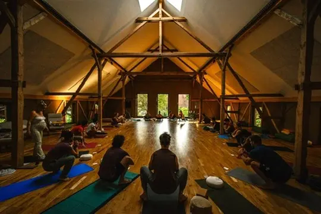

- Log per day - 2026
- Mon 2025-10-04
Damn, it’s been a while!
Why the hiatus
For a while, I was treating this website as my place to think/“learn how to think”, and then I went to Ship It Week and remembered that my bottleneck isn’t thinking, it’s spending time with good people, so this site kinda fell by the wayside. I was writing in this site a whole bunch when I was living at my mum’s, thinking about how to help my family, thinking about what kind of job to get, etc etc
Then I spent a week in Oxford seeing if it could make sense as a place for a long-term base (What if we founded “Fractal Oxford”?), realised that a) I don’t like Oxford (at least, based on what I saw in 1 week!) and actually maybe I’d rather keep travelling and meeting great people.
A better travel era
I had a travel era straight after my enormous breakup in 2022, but I was socially anxious af, spent most of my time alone or with my friend Simmo who I found pretty triggering at the time, and didn’t really get much out of the travelling. Vs recently, with Ship It Week and this 1.5 weeks I just spent in Berlin, there’s a sense that I’m entering the world for the first time as a nascent adult, at 29. A sense of a second birth, maybe it’s my Saturn Return, who knows.
Ship It Week → Oxford → Berlin → Hamburg
So yeah, I just spent 1.5 weeks in Berlin, and now I’m near Hamburg at my friend Carmen’s very yin, connective, hippy-ish retreat. It’s so great already, today is day 1, yesterday was day 0, just arriving and chatting with some people and an early bed time. Today we’ve done an opening circle and a 2 hour playfighting session which was insanely fun. It reminded me how competitive I am - I was the first person to fight; Stefan said “ok who wants to go first” and I stepped into the circle and said I wanted to fight someone and be pretty intense about it, and me and this guy had an awesome, very BJJ-coded fight. I did BJJ in Toronto for a few months and lovedddd it. Really I think I have a lot of competitive energy, a lot of yang energy, and maybe a lot of anger, lol. It’s funny - I feel reasonably scared at the idea of doing e.g. ecstatic dance, but the idea of fighting someone surrounded by everyone else sat in a circle felt awesome, no fear at all, a real excitement to step up

👆 the retreat space, photo from last year (this is my first year attending)
Berlin
- I went to Berlin to hang with people who had just attended the tpot event “TreeWeek”
- Berlin was actually really exhausting in a few different ways. Overall, it was a great experience, and I’m very glad I went. Some good things:
Berlin good things
- Night club!!
- Two awesome night club nights at Beate Uwe → by far the best night club experiences I’ve ever had. Shoes off, dance in your socks, really great music, lovely times with friends. The first night, my friend Brent hosted us, I met some nice new people, I reconnected with the Refract crew (the 4 of us who worked at Brent’s startup), really enjoyed the dancing (perhaps helped by substances), etc. The second night (a week later, the one-week anniversary of my time in Berlin), I stepped into the host role, made it happen, perhaps 8 of us, had some really sweet moments of a felt sense of friendship on the dancefloor, etc.
- Shared Airbnb
- My second shared Airbnb was an awesome spot right next to Boxenhager Platz, two balconies, really spacious. One night my friend James came back and around 1am and we chatted on the balcony til 4am
- Friends telling me that I’m loved
- During an in-person conflict resolution-y thing, a friend cried at the idea of me leaving early, and another friend was very sweet and supportive. Felt difficult to let their love in at the time but a very sweet thing to reflect on, a real milestone moment
- The city!
- I loved the city! We had multiple airbnbs in the same neighbourhood (near Boxenhager Platz), which is also where a few other people live long-term, and it felt lovely to be walking distance to people, to even bump into people on the streets a few times
- New friends and deepening “old” friends
- There were a few people there who I know from Ship It Week, and it felt great to get to connect with them more. At the night club the second time we went, I felt a real deep feeling of friendship and care for Jono and Hannah, which was very sweet
- I also made some new friends, including __ - damn, maybe that’s kind of it, I think I did kinda stick to the people I already knew, which kinda makes sense because there wasn’t that much time!
- Invited to a 1:1
- My new friend Hannah from Ship It Week invited me for coffee on one of the final days and it felt very sweet to receive, a very clear signal that people want me around
Berlin bad things
- City, shared airbnbs, no time to rest
- Man, it’s disregulating being in a city, especially when time was so short! There really wasn’t a feeling of being able to take time to rest - we only had ~1 week! Add to that the fact that I was in shared Airbnbs the whole time so really didn’t have any space to be truly alone. The first ~4 nights I was sleeping on a sofa next to another guy on a sofa in the living room/kitchen that had a very squeaky floor, and I’d be going to bed pretty late every night, probably ~4am on average, getting up at ~11am every day after a fairly bad night of sleep, etc.
- Painful love triangle
- Keeping it brief, I was in a love triangle that was great for 2 days and then pretty stressful for the rest of the time, for all of us. In retrospect I wish I’d had the mindfulness and groundedness to extracate myself from it early on and leave the other 2 to it, I was unskillful in various ways and left Berlin with some shame in my system
- Difficulty in group situations
- A few things made this difficult:
- I wasn’t at TreeWeek, I showed up for the post-TreeWeek hang, so people knew each other more than they knew me, had just had this shared experience, etc
- Group hangs are difficult for me if I don’t know people that well because… idk, I want to do 1:1 stuff with people first, get a good connection, etc. I find it scary to try to connect with people 1:1 in a group setting, partly because you’re overheard, there’s a sense that you’re taking up the group’s attention, etc. So it felt like I couldn’t do what I wanted
- Extroverts take up space → the people who are happy talking a bunch naturally take up more space, and then it’s easy for me to get into a story of “oh man, they’re good at this, they’re doing it right, I’m doing it wrong” (which actually I don’t think is true)
- Skill issues → I wish I had the skills/bravery to say e.g. “hey, I’m feeling disconnected right now, can we check in”, or “I’m sick of brunches, would you be up for a 1:1 dyad practice”, but instead I felt nervous about taking up people’s time in 1:1s if they might prefer being with the group to see more people, so I often went along to brunch despite a fair amount of resistance in my system
- A few things made this difficult:
Learnings/things to carry forwards
- IFS therapy
- I’m now doing weekly IFS sessions with an IFS therapist who my friend Brent highly recommended - the first session happened on the penultimate day in Berlin and it was like “oh fuck, if only I did this earlier on in the week”, very insightful
- Meditation
- Similarly, I wish I had a daily meditation practice to get grounded - there was a lot of frantic (& sleep deprived!) energy in my system
- Don’t get obsessed with women
- A real pattern for me - a friend has diagnosed it as me needing to integrate my Anima. I find women deeply compelling in a way that indicates too much graspiness IMO. Will be working on this
- People really like having me around (even if I don’t understand why)
- I actually don’t get it intellectually, but people really like having me around. I guess it’s simple → I really like a bunch of the people who were there, really enjoy their company, delight in them, etc, so why couldn’t the feeling be mutual? I saw a tweet recently (and it actually came up when I was reading The Pale King, in the Chris Fogle novella) about how yes sure your parents will love you because they’re your kid, but do they delight in you, do they light up when they see you? So I think there’s something there - all my family are pretty tortured and awkward and struggling, and for many years I was tortured and awkward and struggling, so there was a sense that I wasn’t a good hang, I wasn’t a great guy to have around, because I was super socially awkward and tortured and etc. And I still have that gloominess in me, I can still struggle to let people in, but I can also vibe with people much more now. So my sense of “people wouldn’t want me around” is a story that makes sense, but is now outdated, I have lots of evidence from new friends in the last few years that I am loved and appreciated, weird as it is, lol